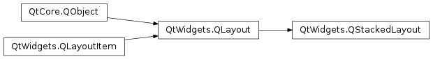

QStackedLayout¶
Synopsis¶
Functions¶
- def
currentIndex() - def
currentWidget() - def
insertWidget(index, w) - def
setStackingMode(stackingMode) - def
stackingMode() - def
widget(arg__1)
Slots¶
- def
setCurrentIndex(index) - def
setCurrentWidget(w)
Signals¶
- def
currentChanged(index) - def
widgetRemoved(index)
Detailed Description¶
The
PySide2.QtWidgets.QStackedLayoutclass provides a stack of widgets where only one widget is visible at a time.
PySide2.QtWidgets.QStackedLayoutcan be used to create a user interface similar to the one provided byPySide2.QtWidgets.QTabWidget. There is also a conveniencePySide2.QtWidgets.QStackedWidgetclass built on top ofPySide2.QtWidgets.QStackedLayout.A
PySide2.QtWidgets.QStackedLayoutcan be populated with a number of child widgets (“pages”). For example:QWidget *firstPageWidget = new QWidget; QWidget *secondPageWidget = new QWidget; QWidget *thirdPageWidget = new QWidget; QStackedLayout *stackedLayout = new QStackedLayout; stackedLayout->addWidget(firstPageWidget); stackedLayout->addWidget(secondPageWidget); stackedLayout->addWidget(thirdPageWidget); QVBoxLayout *mainLayout = new QVBoxLayout; mainLayout->addLayout(stackedLayout); setLayout(mainLayout);
PySide2.QtWidgets.QStackedLayoutprovides no intrinsic means for the user to switch page. This is typically done through aPySide2.QtWidgets.QComboBoxor aPySide2.QtWidgets.QListWidgetthat stores the titles of thePySide2.QtWidgets.QStackedLayout‘s pages. For example:QComboBox *pageComboBox = new QComboBox; pageComboBox->addItem(tr("Page 1")); pageComboBox->addItem(tr("Page 2")); pageComboBox->addItem(tr("Page 3")); connect(pageComboBox, SIGNAL(activated(int)), stackedLayout, SLOT(setCurrentIndex(int)));When populating a layout, the widgets are added to an internal list. The
PySide2.QtWidgets.QLayout.indexOf()function returns the index of a widget in that list. The widgets can either be added to the end of the list using thePySide2.QtWidgets.QStackedLayout.addWidget()function, or inserted at a given index using thePySide2.QtWidgets.QStackedLayout.insertWidget()function. ThePySide2.QtWidgets.QLayout.removeWidget()function removes the widget at the given index from the layout. The number of widgets contained in the layout, can be obtained using thePySide2.QtWidgets.QStackedLayout.count()function.The
PySide2.QtWidgets.QStackedLayout.widget()function returns the widget at a given index position. The index of the widget that is shown on screen is given byPySide2.QtWidgets.QStackedLayout.currentIndex()and can be changed usingPySide2.QtWidgets.QStackedLayout.setCurrentIndex(). In a similar manner, the currently shown widget can be retrieved using thePySide2.QtWidgets.QStackedLayout.currentWidget()function, and altered using thePySide2.QtWidgets.QStackedLayout.setCurrentWidget()function.Whenever the current widget in the layout changes or a widget is removed from the layout, the
PySide2.QtWidgets.QStackedLayout.currentChanged()andPySide2.QtWidgets.QStackedLayout.widgetRemoved()signals are emitted respectively.
-
class
PySide2.QtWidgets.QStackedLayout¶ -
class
PySide2.QtWidgets.QStackedLayout(parentLayout) -
class
PySide2.QtWidgets.QStackedLayout(parent) Parameters: - parentLayout –
PySide2.QtWidgets.QLayout - parent –
PySide2.QtWidgets.QWidget
Constructs a
PySide2.QtWidgets.QStackedLayoutwith no parent.This
PySide2.QtWidgets.QStackedLayoutmust be installed on a widget later on to become effective.See also
PySide2.QtWidgets.QStackedLayout.addWidget()PySide2.QtWidgets.QStackedLayout.insertWidget()Constructs a new
PySide2.QtWidgets.QStackedLayoutand inserts it into the givenparentLayout.Constructs a new
PySide2.QtWidgets.QStackedLayoutwith the givenparent.This layout will install itself on the
parentwidget and manage the geometry of its children.- parentLayout –
-
PySide2.QtWidgets.QStackedLayout.StackingMode¶ This enum specifies how the layout handles its child widgets regarding their visibility.
Constant Description QStackedLayout.StackOne Only the current widget is visible. This is the default. QStackedLayout.StackAll All widgets are visible. The current widget is merely raised.
-
PySide2.QtWidgets.QStackedLayout.currentChanged(index)¶ Parameters: index – PySide2.QtCore.int
-
PySide2.QtWidgets.QStackedLayout.currentIndex()¶ Return type: PySide2.QtCore.int
-
PySide2.QtWidgets.QStackedLayout.currentWidget()¶ Return type: PySide2.QtWidgets.QWidgetReturns the current widget, or 0 if there are no widgets in this layout.
-
PySide2.QtWidgets.QStackedLayout.insertWidget(index, w)¶ Parameters: - index –
PySide2.QtCore.int - w –
PySide2.QtWidgets.QWidget
Return type: PySide2.QtCore.intInserts the given
widgetat the givenindexin thisPySide2.QtWidgets.QStackedLayout. Ifindexis out of range, the widget is appended (in which case it is the actual index of thewidgetthat is returned).If the
PySide2.QtWidgets.QStackedLayoutis empty before this function is called, the givenwidgetbecomes the current widget.Inserting a new widget at an index less than or equal to the current index will increment the current index, but keep the current widget.
See also
PySide2.QtWidgets.QStackedLayout.addWidget()PySide2.QtWidgets.QLayout.removeWidget()PySide2.QtWidgets.QStackedLayout.setCurrentWidget()- index –
-
PySide2.QtWidgets.QStackedLayout.setCurrentIndex(index)¶ Parameters: index – PySide2.QtCore.int
-
PySide2.QtWidgets.QStackedLayout.setCurrentWidget(w)¶ Parameters: w – PySide2.QtWidgets.QWidgetSets the current widget to be the specified
widget. The new current widget must already be contained in this stacked layout.
-
PySide2.QtWidgets.QStackedLayout.setStackingMode(stackingMode)¶ Parameters: stackingMode – PySide2.QtWidgets.QStackedLayout.StackingMode
-
PySide2.QtWidgets.QStackedLayout.stackingMode()¶ Return type: PySide2.QtWidgets.QStackedLayout.StackingMode
-
PySide2.QtWidgets.QStackedLayout.widget(arg__1)¶ Parameters: arg__1 – PySide2.QtCore.intReturn type: PySide2.QtWidgets.QWidgetReturns the widget at the given
index, or 0 if there is no widget at the given position.
-
PySide2.QtWidgets.QStackedLayout.widgetRemoved(index)¶ Parameters: index – PySide2.QtCore.int
© 2018 The Qt Company Ltd. Documentation contributions included herein are the copyrights of their respective owners. The documentation provided herein is licensed under the terms of the GNU Free Documentation License version 1.3 as published by the Free Software Foundation. Qt and respective logos are trademarks of The Qt Company Ltd. in Finland and/or other countries worldwide. All other trademarks are property of their respective owners.